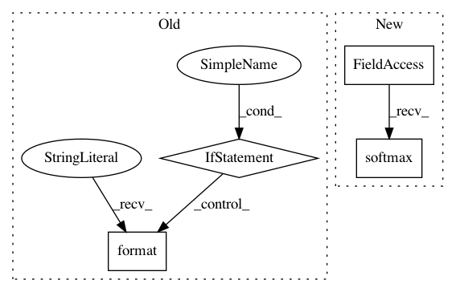

a1172cf54f3a14fb57e6b6405ce58f29ef543334,niftynet/network/dense_vnet.py,DenseVNet,layer_op,#DenseVNet#Any#Any#Any#,70
Before Change
is_training=is_training,
keep_prob=hp["p_channels_selected"])
tf.summary.scalar("skip{}".format(idx),tf.reduce_mean(tf.square(skip)),[tf.GraphKeys.SUMMARIES])
if not down is None:
tf.summary.scalar("down{}".format(idx),tf.reduce_mean(tf.square(down)),[tf.GraphKeys.SUMMARIES])
all_segmentation_features.append(image_resize(skip,output_shape))
segmentation = ConvolutionalLayer(
self.num_classes+1,
kernel_size=hp["final_kernel"],
After Change
segmentation = segmentation + \
SpatialPriorBlock([12] * spatial_rank, output_shape)
segmentation = image_resize(segmentation, input_size[1:-1])
image3_axial("seg", tf.nn.softmax(segmentation)[:, :, :, :, 1:] * 255.,
3, [tf.GraphKeys.SUMMARIES])
image3_axial("img",
tf.minimum(255., tf.maximum(0.,
In pattern: SUPERPATTERN
Frequency: 3
Non-data size: 4
Instances
Project Name: NifTK/NiftyNet
Commit Name: a1172cf54f3a14fb57e6b6405ce58f29ef543334
Time: 2017-08-24
Author: eli.gibson@gmail.com
File Name: niftynet/network/dense_vnet.py
Class Name: DenseVNet
Method Name: layer_op
Project Name: stellargraph/stellargraph
Commit Name: 145170ca9bbd89aa01d8a40841e3c039d3683af8
Time: 2019-06-03
Author: andrew.docherty@data61.csiro.au
File Name: stellargraph/layer/graph_attention.py
Class Name: GraphAttention
Method Name: call
Project Name: tensorflow/models
Commit Name: dfe2a43fb378b557f3dfc4315417afb291cd16b7
Time: 2018-09-25
Author: aman2930@gmail.com
File Name: official/mnist/mnist_tpu.py
Class Name:
Method Name: model_fn